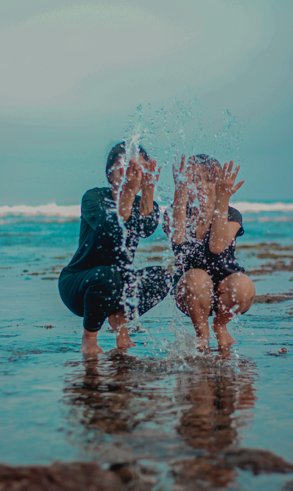
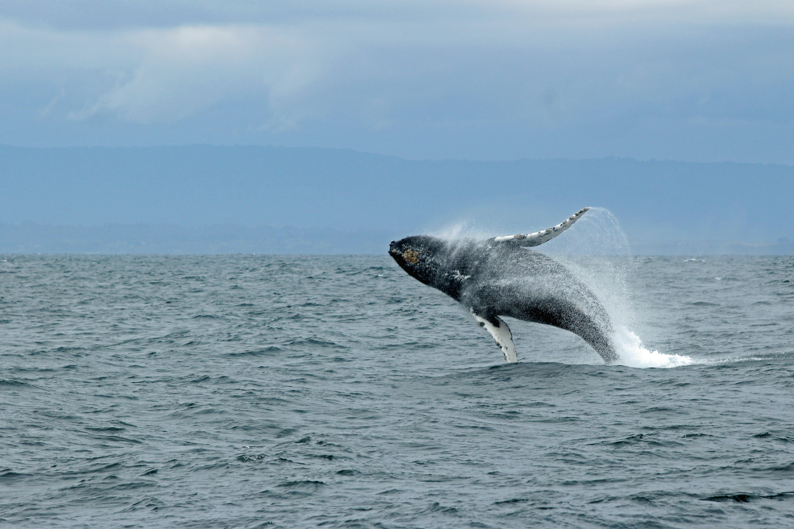

Beach play
No vacation is complete without a beautiful beach on which to relax and find your bliss. Look for secluded beaches with warm waters, soft sand, and calm surf so you can swim and enjoy being enveloped in your very own natural salt water bath. While packing, don’t forget plenty of reading material and sunscreen, especially if you’ll be posting up on a remote beach without easy access to stores.
Stand Up Paddle Boarding

This sport is popular for a reason and it makes for a fantastic vacation activity at a luxury resort. When the waters on your beach are calm and warm, stand up paddle boarding can be just as relaxing as it is good for you. Get the blood flowing and warm up your muscles while taking in the scenery around you.
Night Snorkeling

You’ll find snorkeling at many luxury resort destinations, but night snorkeling is an experience like no other. While night snorkeling, you’ll find nocturnal fish that aren’t visible during the day. Or you may experience fish that change as the sun goes down.
Whale Watching
Any who have experienced the magnificent breach of a whale will tell you this is an activity you need to check off from your bucket list. , you can experience Sperm whales and Humpback whales surfacing. Boat tours are the most popular way to see whales